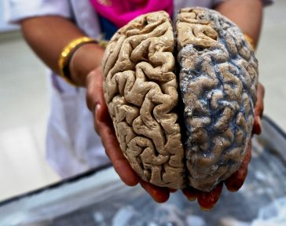

La consciencia y la física cuántica: cuando los secularistas necesitan un camino para su espiritualidad
La más extraordinaria característica del cerebro es su plasticidad

Las creencias sobrenaturales son difíciles de descalificar hasta para los secularistas. Aunque muchos han abandonado las religiones, usan las incógnitas en la ciencia para intentar demostrar la existencia de elementos sobrenaturales, como una consciencia universal regida por la cuántica y que nos une a todos después de la muerte. De hecho, uno de los argumentos especulativos más intrigantes en física e informática no tiene nada que ver con la física o la informática sino con el cerebro y la consciencia humana. Y una idea en común es la física cuántica.
¿Hasta dónde es el cerebro similar a una computadora, incluyendo una computadora cuántica? Y si el cerebro es completamente similar a una computadora, ¿esto quiere decir que la Inteligencia artificial también contará con una consciencia?
En la actualidad, hay dos sistemas de pensamientos: por un lado, tenemos a investigadores como Scott Aaronson, científico informático de MIT, quien explica que debido a que el cerebro existe dentro del universo y debido a que las computadoras pueden simular todo el universo con suficiente poder, entonces el cerebro completo puede simularse en una computadora. Por esto se piensa que, si el cerebro se puede simular en una computadora, entonces, su estructura y funciones, incluyendo la consciencia, deben ser completamente lógicas y computacionales.
Esta idea se pierde en los cerebros de los que prefieren un modelo para una consciencia espiritual. El neurólogo Roger Penrose, quien logró ponerle el casco de Dios a Richard Dawkins, no piensa que una computadora es igual al cerebro. Penrose sugiere que tu consciencia surge de una física misteriosa y exótica que actúa dentro de tus neuronas (las palabras “misteriosas” y “exóticas”, dejan mucho a la imaginación).
Penrose, que en la actualidad está casi en sus 90 años, y quien ha contribuido enormemente al conocimiento del cerebro, sostiene que la consciencia humana tiene ciertas características y habilidades que las computadoras convencionales no pueden replicar. La naturaleza de las computadoras es algorítmica y lógica, afirma, y la mente humana trasciende los algoritmos y la lógica.
Sin embargo, esto podría cambiar con una computadora cuántica.
Uno de los problemas que tengo con las hipótesis sobrenaturales es que piensan que el ser humano es especial. Hay dioses que nos cuidan y nos juzgan, existe un alma que regala inmortalidad, somos espíritus más que animales terrestres con polvo de estrellas. Pero los humanos prefieren la superstición, estamos anclados a instintos biológicos que se han desarrollado de formas diferentes según las culturas y, todavía, una gran parte de la humanidad sigue siendo programada para pensar en ángeles, no en neutrinos. Sin embargo, la idea de Penrose de que dentro de las neuronas existe un mundo cuántico enigmático ha despertado la sed en muchos científicos secularistas que encuentran en este mundo cuántico la espiritualidad que habían creído perder.
Aunque Penrose prefiere alejarse de estos frenesíes sobre una espiritualidad cuántica, otros científicos que han trabajado con él han preferido tomar la ruta espiritual y creen que el mundo cuántico dentro de las neuronas origina la consciencia (esto podría ser posible, pero no hay evidencias para demostrar que es así) y que el entrelazamiento de las partículas subatómicas es responsable de unir todas las consciencias en el universo y mantenerlas activas más allá de la muerte, algo así como el alma, pero con partículas subatómicas. ¡Cómo han evolucionado nuestros mitos e ilusiones!
En 2006, en una conferencia de científicos ateos en el Instituto Salk en La Joya, California, donde se encontraban Richard Dawkins, Sam Harris (quien hoy cree en una consciencia espiritual a través de un tipo específico de meditación) Patricia Churchland, Steven Weinberg y Neil deGrasse Tyson, también había algunos secularistas que, aunque no profesan ninguna religión, desean mantener algunas ideas religiosas vivas, como la inmortalidad del espíritu.
Uno de ellos es el doctor en medicina Stuart Hameroff, quien se denomina secularista espiritual. Hemaroff explicó en la conferencia que “la consciencia involucra procesos en niveles más profundos, específicamente secuencias de cálculos cuánticos (~ 40 por segundo) en estructuras llamadas microtúbulos dentro de las neuronas del cerebro. Los cálculos cuánticos que proponemos se vinculan con actividades a nivel neuronal, y también son ondas en la geometría fundamental del espacio-tiempo, el nivel más básico del universo”.
El doctor no tenía muchos seguidores entre la audiencia, sin embargo, continuó con su elaborada producción sobre cómo la cuántica neuronal resucita la espiritualidad en el Universo. De hecho, él define su espiritualidad con estos tres puntos:
Interconexión entre los seres vivos y el universo.
Un depósito omnipresente de inteligencia cósmica/valores platónicos en contacto con nuestras elecciones y percepciones conscientes.
Existencia de consciencia después de la muerte.
Comida para los que piensan que el Universo, como un dios, está pendiente a nuestros problemas individuales.
Hameroff sugiere que las elecciones y percepciones conscientes se ven afectadas por esta información platónica universal que Penrose denominó influencia no computable.
“Comparo tal influencia propuesta en las elecciones conscientes con ‘seguir el camino del Tao’ o ‘guía divina’, asegura Hameroff.
Qué idea tan poderosa es esa que afirma que existe un poder divino. Imagino que el cerebro de Dawkins estaba hirviendo con esta presentación. De hecho, el doctor comparó a la mayoría de la audiencia con la inquisición porque solo unos cuantos lo aplaudieron, lo que para mí es una comparación ignorante y exagerada. ¿Estaban los ateos asesinando y torturando a todos los secularistas espirituales? Por supuesto que no, simplemente no se tragaron estas explicaciones que utilizan el mismo método del dios de los huecos para la espiritualidad; una suerte que la inquisición de los ateos es dulce en comparación.
Además, ¿qué esperaba? ¿Una recepción cálida por personas que no están de acuerdo con él, científicos que más que ateos son escépticos y no son propensos a asumir explicaciones extraordinarias cuando no se presentan evidencias extraordinarias?
La cuántica y la consciencia recogen dos de las incógnitas que todavía persisten en la ciencia y esta forma de encontrar lo divino en lo que aún no se conoce ha sido uno de los pilares religiosos desde que estos mitos existen. La ciencia es básicamente escéptica y va de la mano con las evidencias, las opiniones de los científicos sean ateas, religiosas o espirituales no cuentan y no deben ser protagonistas en sus experimentos, si lo son, el método y los demás científicos no tardarán en descubrirlo.
El mapa neurológico de la consciencia
Los humanos tenemos consciencia de nuestro cuerpo. Nuestros cerebros controlan nuestros movimientos a través de un complejo mapa neuronal y muchos neurólogos desde hace mucho tiempo han estado estudiando por qué muchos pacientes que han perdido una extremidad o uno de sus dedos, todavía perciben dolor en esas extremidades llamadas fantasmas (cómo nos gusta referirnos a elementos científicos con palabras sobrenaturales, tanto así que los diccionarios han tenido que agregar significados a las mismas).
Un miembro fantasma es esa mano que no está ahí, pero que todavía la sientes, esa pierna que perdiste hace unos años, pero que todavía mueve sus dedos y causa espasmos en un miembro que ya no existe, por eso lo fantasmagórico del asunto.
De acuerdo con el neurólogo V.S. Ramachandran, las extremidades fantasmas probablemente se conocen desde la antigüedad y por eso no es sorprendente que exista un folclore acerca de ellas.
“Después de que Lord Nelson perdió su brazo derecho durante un ataque fallido en Santa Cruz de Tenerife, experimentó fuertes dolores en el miembro fantasma, incluyendo la sensación de dedos clavándose en su palma fantasma. La aparición de estas sensaciones fantasmales llevó al Señor del Mar a proclamar que su fantasma era prueba directa de la existencia del alma (Riddoch, 1941). Sin embargo ¿si un brazo puede sobrevivir la aniquilación física, ¿por qué no toda la persona?”, se pregunta Ramachandran.
De hecho, Ramachandran descubrió que existe un mapa en el cerebro de las sensaciones que sentimos en la cara que parece se ha expandido al miembro perdido. Y es que el cerebro es sumamente plástico, cuando un área se daña, otra es reasignada para tomar algunas de sus tareas. Por ejemplo, cuando las personas que han sido amputadas se tocan un área de su cara, también lo sienten en una mano que ha sido amputada.
Ramachandran es el genio que descubrió que un simple espejo puede eliminar, aunque sea por unos minutos, los dolores y malestares en el miembro fantasma.
“Los miembros fantasmas tienen memoria”, nos dice, “mi paciente Steve perdió su brazo derecho y aún sentía que llevaba su anillo de bodas”.
De acuerdo con el neurólogo, la cuestión de cómo el cerebro construye una imagen del cuerpo ha sido un tema de considerable interés para los neurólogos (Head 1918; Brain 1941; Critchley 1953), psicólogos (Schilder 1950), e incluso filósofos (Merleau-Ponty 1967; Dennett 1978; O’Shaughnessy 1980).
“Aunque esta imagen se construye a partir de evidencia evanescente y fragmentaria derivada de múltiples sistemas sensoriales como la visión, propiocepción y audición, tenemos una construcción mental interna y estable de un yo corporal unitario que perdura en el espacio y el tiempo, por lo menos hasta su eventual aniquilación en la muerte”.
Se han estudiado cerebros de personas que han pasado por intensos traumas físicos que han dañado regiones cerebrales específicas, como los pacientes que ven a sus padres y piensan que, aunque se parecen a ellos, no son realmente ellos y que han sido suplantados por otras personas. Y no solo eso, existen pacientes con este problema que se ven en el espejo y piensan que ellos también han sido suplantados por otras personas; también están los pacientes, como aquel paciente del neurólogo Oliver Sacks, quien confundió a su esposa con un sombrero.
Desde al menos el siglo XIX, los científicos saben que la corteza cerebral es importante para la consciencia y es por eso que los trastornos psiquiátricos son otra área de interés para los investigadores de la consciencia, ya que algunas afecciones de salud mental, como la esquizofrenia, el trastorno obsesivo-compulsivo y la depresión, pueden ser causadas por problemas a nivel inconsciente.
Por otro lado, científicos también han estado investigando la base neuronal de las alucinaciones con una “máquina de alucinaciones”, un programa de realidad virtual que utiliza el aprendizaje automático para simular experiencias visuales alucinatorias en personas con cerebros sanos.
“A través de experimentos han demostrado que estas alucinaciones se asemejan a los tipos de visiones que las personas experimentan mientras toman drogas psicodélicas y estas drogas psicodélicas se han utilizado cada vez más como una herramienta para investigar los fundamentos neuronales de la consciencia”, escribe Ramachandran.
Si los investigadores pueden descubrir los mecanismos detrás de las alucinaciones, podrían manipular las áreas relevantes del cerebro y, a su vez, tratar la causa subyacente de la psicosis en vez de solo abordar los síntomas. Al demostrar lo fácil que es manipular las percepciones de las personas, el trabajo de Ramachandran sugiere que nuestro sentido de la realidad es solo otra faceta de cómo experimentamos el mundo.
© 2021 Glenys Álvarez
Comentarios
Comments powered by Disqus